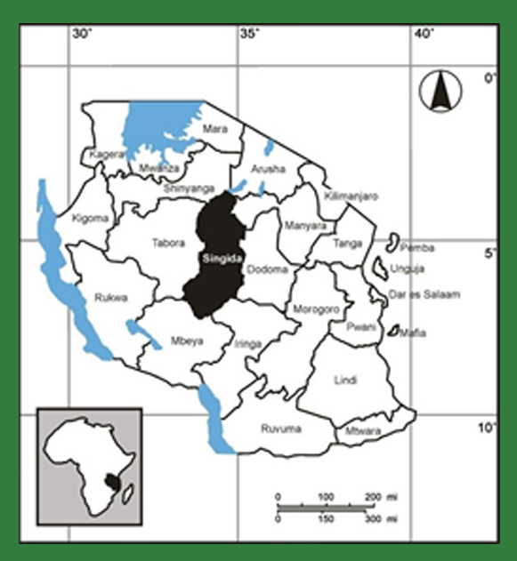

High-Purity, Naturally Grown
Tanzanian Sesame for Global Markets
We supply premium-grade white and mixed sesame sourced directly from Tanzania’s top producing zones
that are verified for purity, moisture, color, and oil content, with fully professional export preparation.
ABOUT SESAME SEEDS
Tanzania produces some of the cleanest, naturally grown sesame seeds globally. Favored for their high oil content, strong aroma, and consistent color, Tanzanian sesame is widely demanded by processors, tahini manufacturers, oil mills, snack producers, and spice buyers across Asia, Europe, and the Middle East.
CropLink sources sesame from verified farmers, AMCOS, and processors operating in the country’s sesame belt ensuring quality that is consistent, reliable, and export-ready.
Tanzanian sesame stands out because it is naturally cultivated, mostly non-GMO, and dried under optimal sunlight conditions that preserve flavor and oil profile.
.jpg)
WHY TANZANIA’S SESAME IS SUPERIOR
.jpg)
Harvest Seasons & Availability
Main Season: June – September (Peak), October – November (Extended)
Best Buying Window: July – October
Availability Calendar
| Month | Availability |
|---|---|
| June | Early Crop |
| July | High |
| August | Very High |
| September | Very High |
| October | High |
| November | Moderate |
| December – May | Off Season |

Growing Regions & Maps
- Singida (Premium white sesame; high purity)
- Manyoni (Clean, uniform grains; excellent drying climate)
- Kondoa
- Dodoma Rural
- Iramba
- Tabora
- Shinyanga (mixed sesame varieties)
- Morogoro & Kilosa (increasing volumes)
.jpg)
Quality Specifications & Grading
- Purity: 98–99%
- Moisture: ≤ 7%
- FFA: < 2%
- Admixture: ≤ 1–2%
- Oil Content: 48–52%
Grades Available: Premium White, Natural White, Mixed Sesame, Golden Sesame
How CropLink Supports Buyers
- Source directly from Singida, Manyoni, Dodoma & Morogoro
- Provide pre-purchase samples & real-time lot videos
- Conduct purity, moisture & color assessments
- Ensure proper cleaning, sorting, and bagging
- Supervise warehouse handling & weighing
- Inspect loading with photos, videos & seal confirmation
- Manage all export documentation
- Provide transparent communication throughout procurement
Typical Shipment & Packaging Options
- 50 kg PP bags (standard)
- 25 kg bags (special markets)
- Bulk jumbo bags (on request)
Container Loading: 20 ft – 19–20 MT, 40 ft – 26–28 MT
Shipment Types: Single-container, Multi-container seasonal, Bulk procurement for processors